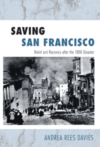

How the relief and rebuilding efforts after the 1906 disaster reproduced the class and racial divisions of pre-quake San Francisco
How the relief and rebuilding efforts after the 1906 disaster reproduced the class and racial divisions of pre-quake San Francisco


 How the relief and rebuilding efforts after the 1906 disaster reproduced the class and racial divisions of pre-quake San Francisco
How the relief and rebuilding efforts after the 1906 disaster reproduced the class and racial divisions of pre-quake San Francisco

|  |
Saving San FranciscoRelief and Recovery after the 1906 DisasterAndrea Rees Daviespaper EAN: 978-1-43990-433-6 (ISBN: 1-4399-0433-2) |
"Davies uses the 1906 disaster as a lens through which to ask hard questions about the social and political life of San Francisco. She successfully weaves together the intricate stories of ordinary people's struggles and daily lives with high politics, urban history, and analyses of race, class, and gender. Important, smart, and crisply written, Saving San Francisco is both forceful and lively, and Davies's Epilogue about master disaster narratives is a graceful, moving close to what will become 'the' book on this subject for years to come."
— Barbara Berglund, Associate Professor of History at the University of South Florida and author of Making San Francisco American: Cultural Frontiers in the Urban West, 1846–1906
For most San Franciscans, April 18, 1906 started at 5:12 am with 65 seconds of violent quaking followed by a relentless, raging fire that left 98% of the structures in the most populated part of the city in ruins. However, while everyone felt the earthquake equally, they did not all suffer to the same degree. In Saving San Francisco, Andrea Rees Davies, a former firefighter, tells a new story of the 1906 catastrophe.
Weaving the experiences of ordinary people with urban politics and history, Saving San Francisco challenges the long-lived myth that the fire that spread as a result of the quake brought out altruism and leveled class distinctions among residents. Although the relief and rebuilding efforts provided some opportunities for marginalized groups and individuals--such as white women and the Chinese-to step outside their limited spheres to find their voices in the public realm, Davies shows how the disaster did not break down social barriers; rather, it maintained the prevailing hierarchies of class, race, and gender.
Excerpt available at www.temple.edu/tempress
"Saving San Francisco makes an original contribution to San Francisco history and to the study of how cities respond to natural disasters. Davies has written the first systematic social and political history of the recovery efforts after the earthquake and fire of 1906. Using a rich variety of archival evidence, including an excellent selection of personal stories, she contributes to both social welfare and Progressive Era scholarship. This is a convincing revisionist account that shows how the recovery process was shaped by existing gender, class, and racial fault lines in San Francisco society."
—William Issel, Professor of History Emeritus at San Francisco State University and coauthor (with Robert W. Cherny) of San Francisco, 1865–1932: Politics, Power, and Urban Development
"There have been countless words written on the 1906 San Francisco earthquake, but Davies counters the conventional narrative of the disaster, arguing that while all San Franciscans experienced the earthquake, not all did so in the same way.... She skillfully interweaves the story of San Francisco’s political and economic maneuvering at the time with the rise of women’s work within progressive social welfare organizations and the stories of the working class and Chinese inhabitants. VERDICT Davies deftly shows how the disaster ruptured the geography, social organization, and political life of San Francisco and how hierarchies of class, gender, and race became more firmly entrenched as a result. Her book cuts across a number of disciplines and is recommended for those studying urban history, disaster history, the history of San Francisco, or the intersections of race, gender, and class history."
—Library Journal
"This book has a wealth of pragmatic information about the little that went right and the mickle that went wrong in the disaster response (that continued for several years). It makes fascinating and thought-provoking reading for response planners."
—Crisis/Response
"Davies has written a fine account of the relief and recovery efforts that followed the 1906 San Francisco earthquake and fire. One of the book's most important strengths is its documentation of protests against class-, gender-, and race-biased relief efforts. Highly Recommended."
—CHOICE
"[A] fresh sociological account of the 1906 San Francisco earthquake and fires. She shows convincingly that the devastation caused by this 'natural' disaster was largely the result of human design.... Saving San Francisco recounts the chilling and somber stories of those who suffered terribly in the aftermath of the earthquake and fires."
—The American Journal of Sociology
"[T]he most comprehensive and astute study to date on the 1908 earthquake and fire. Utilizing insights from social, political, urban, and gender history, [Davies] provides a nuanced account that significantly revises previous interpretations, which emphasized the 'fall of a great city and the rise of an even better one.'... Davies’ study is built upon masterful and creative research.... [Her] book is an excellent, complex study of how disasters can both reinforce and challenge socially constructed differences and unequal power."
—Southern California Quarterly
"Saving San Francisco amply demonstrates...this disaster [the 1906 earthquake and fire] did more to deepen social divisions than to alleviate them.... Davies’s contribution is to put flesh on these abstractions. Based on a deep mining of archives, her book offers a detailed account of the uneven social impact of the 1906 disaster. A former firefighter, Davies shows particular sensitivity to the experiences of those on the margins of society.... Some of the best passages of the book feature textured accounts that range from life in the refugee camps and instances of opposition (such as the flour riots) to relief arrangements that were hierarchical and discriminatory."
—The Journal of American History
"[M]ost of the records from the Red Cross’s recovery and rebuilding efforts have disappeared, as have San Francisco’s Associated Charities documents. Andrea Rees Davies sets out to piece together this long-lost story by pulling together information from numerous sources and drawing on previously undiscovered material. Her sleuthing results in a collection of compelling vignettes that highlights the strains between lowerclass recipients of aid and authority figures.... Davies’s archival digging adds significantly to our understanding of San Francisco’s relief and recovery efforts following the 1906 catastrophe and will interest students and scholars of early twentieth-century America."
—American Historical Review
"Davies’s research serves perhaps most significantly to illuminate the stories of those disadvantaged few who valiantly exerted their limited power, insisting on recognition of their rights in times of chaos."
—Western Historical Quarterly
"Historians familiar with the literature of the 1906 San Francisco catastrophe will give a mental sigh of relief when reading the introduction to this useful book. Unlike authors of other valuable but journalistic accounts of the disaster, Andrea Rees Davies clearly and systematically sets forth in her introduction the historical methodology and argumentation [she] used to construct this monograph.... Her sharpest focus is on disaster survivors themselves, and although Davies inserts their stories in the larger political and economic context, her work remains essentially a social history.... Davies does an excellent job of teasing out the complexities of the post-disaster city while maintaining her focus on San Franciscans themselves in all their diversity."
—The Journal of the Gilded Age and Progressive Era
"[A]n ef?cient yet expansive reading of the earthquake and ?re that nearly destroyed America’s largest West Coast city in 1906. Saving San Francisco deftly combines environmental history, Progressivism historiography (especially the shift from charity toward ‘‘scienti?c’’ social work), and quantitative social history.... [A]n important and original contribution to the study of the 1906 disaster and its larger urban impact."
—Pacific Historical Review
"Davies has written the first true social history of the [1906 earthquake and fire] catastrophe and its aftermath.... Saving San Francisco does an excellent job of foregrounding the voices of women, working-class people, and ethnic minorities, particularly the Chinese, to add new dimensions to the history of the 1906 earthquake and fire and provide a case study of disaster relief politics. Davies' gender analysis represents a particularly important contribution. This concise, well-written history will be a valuable resource for scholars and students of California history, natural disasters, and the Progressive Era United States."
—Journal of American Ethnic History
Acknowledgements
Introduction
1. Points of Origin: Crises across the City
2. Disaster Relief: Local Troubles, National Solutions
3. Disastrous Opportunities: Unofficial Disaster Relief
4. Disaster Relief Camps: The Public Home of Private Life
5. The New San Francisco
Epilogue: Disaster Remnants
Appendix: Tables
Notes
Bibliography
Index
Andrea Rees Davies is an Assistant Professor in the Department of History at California State University, Northridge.
History
Urban Studies
Race and Ethnicity
© 2015 Temple University. All Rights Reserved. This page: http://www.temple.edu/tempress/titles/2123_reg.html.